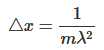

Created Monday 20 September 2021
Sub-material travel, commonly known as SMT, teleportation, or sightseeing, was a property of irradiated mutite that allowed it to enter the sub-material plane and reenter at a different location. This property also allowed any material contained within a layer of irradiated mutite to be transported as well, and the term "sub-material travel" became synonymous with this use. SMT was only possible when the sample was not being observed, and the sample could only leave the sub-material plane when the point at which it would reappear was observed. From the receiving perspective, the sample would have looked to have been in the observed location prior to their notice of it. The magnitude of displacement which SMT transported a sample was based on the wavelength radiation the mutite was exposed to and the mass of the sample.
The equation for SMT was as follows:

defined where △x is the magnitude of displacement in meters, λ is wavelength in meters, and m mass in muts (the mass of one cubic meter of mutite, about 8422 kg). The direction of displacement was directly opposite to the direction the final observer was looking the moment their observation ended.
Because the numbers involved with this equation are so large, a standarized form was created for the units. A unit of distance, known as a kal (named after the discoverer of SMT), was created. One kal was equal to the distance one mut of mutite moved when exposed to radiation with a wavelength of ten nanometers, being exactly 10^16 meters or approximately 1.06 lightyears.
The precise nature of sub-material travel necessitated specialized professionals, called sub-material travel operators or sight-seers, who were so disciplined at precise non-observation as to allow them to transport individuals to specific locations. Sight-seeing was unequivocally the most important profession during the scientific era, as without it no effective sub-material travel would have been possible.
History
Discovery
In [876 LEC Scientific Era], a lithographer and scientist by the name of Kal Smitka, while experimenting with different materials to create ink, discovered an as-yet undiscovered property of mutite. While experimenting with the effects of radiation on certain pigments, Smitka placed a very small sample of aspidene mutite (interested by it's ability to retain the color of light it is exposed to) in his radiation chamber. While observing the sample, it seemed to have no effect, so Smitka removed the sample. In preparation for storage, he coated it with a layer of unbonded adranium, placed it in a small vaclev, and turned away. After turning back, Smitka found the mutite sample where it had been placed in the vaclev, but its coating of adranium, both unbonded and aspidene, was gone. After adjusting the position of the mutite in the chamber, it was revealed that it and the adranium had been occupying the same space (a superposition). Amazed at the discovery, Smitka checked the logs on the vaclev. Upon reading the dimensional logs, they discovered that the mutite had not been in the exact position it had originally been placed, but rather it appeared to have been translated 410 nanometers (even if the translation had been a noticable distance, the nature of the vaclev would have put it back to its original position anyway, at least given the translation would have still been inside the chamber). In reality, the sample had not moved at all. It, in fact, had entered the sub-material plane, and had simply reappeared 410 nanometers away. This was the first discovery of Sub-Material Travel.
Early Inventions
Limitations
Theoretically, there was no limit to the distance that could be travelled using sub-material travel, however there was number of practical limitations. Because the displacement of sub-material travel was based upon the mass of the object and the wavelength of the exposed radiation, at a constant mass, the possible displacement was limited by the possible wavelength that could be generated. Additionally, however well-trained sight-seers were, their necessary humanity meant that there was always a margin of error. This error would have increased the further away a target's destination was. Finally, while not necessarily an issue of distance, the necessity to have another sight-seer at one's destination for the return trip significantly restricted the possibilities of return journeys.
{kind=link}
{kind=link}